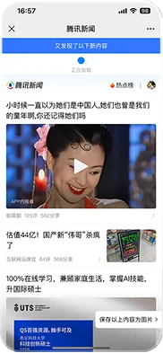
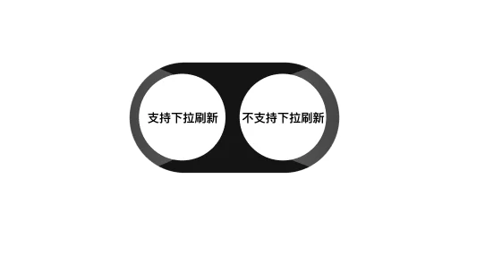
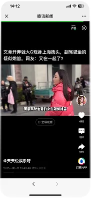
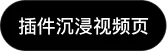
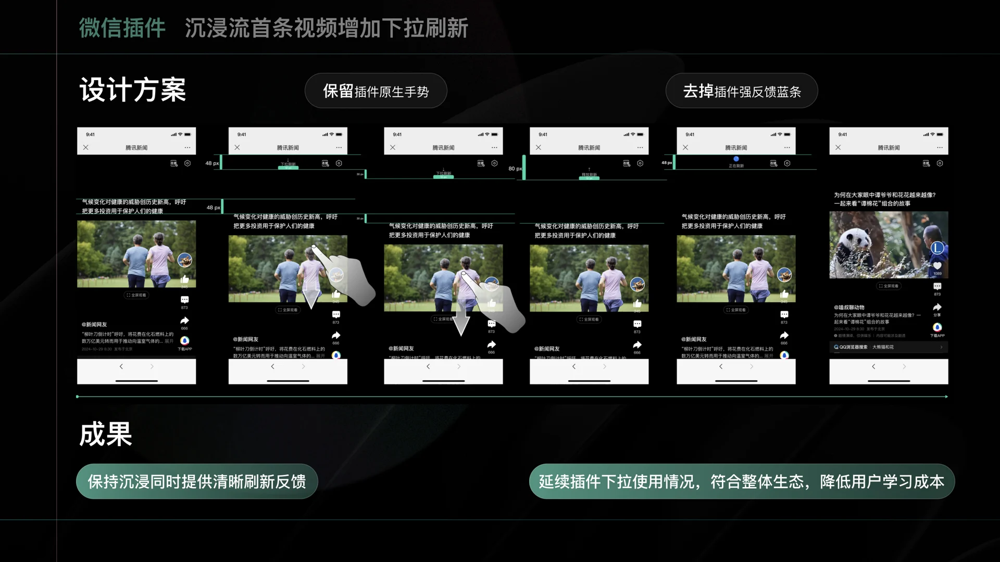

手势复用
沿用一级页下拉动作，不增加新的学习成本。

02 / BUSINESS REQUIREMENT
当首条内容无法建立兴趣时，为用户增加主动换新的入口，同时不破坏沉浸观看。
01 / CONTEXT


用户已经形成“下拉即可换新”的操作预期，进入沉浸流后却失去控制权。


问题不只是“不能刷新”，而是首条内容失配后没有恢复路径
02 / DESIGN PRINCIPLE
沿用一级页下拉动作，不增加新的学习成本。
限制触发范围，避免滑动浏览过程中误触刷新。
用短促状态反馈说明内容正在换新，维持观看连续性。
